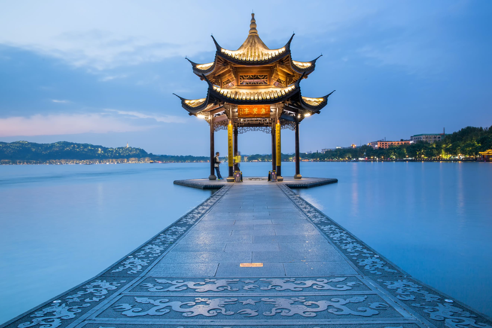
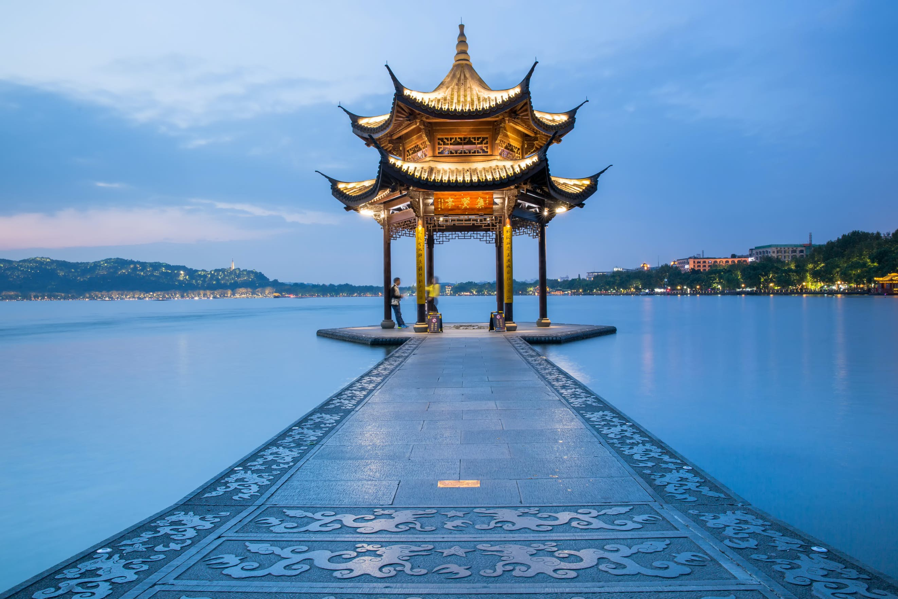

Travel
Hangzhou

location
China
Hangzhou, situated in eastern China, is a city that seamlessly blends ancient heritage with natural splendor. At the heart of its allure lies the iconic West Lake, a UNESCO World Heritage Site celebrated for its picturesque landscapes. Here, serene waters mirror the surrounding lush gardens, historic temples, and quaint tea houses, creating a tranquil oasis in the heart of the city. West Lake has been an enduring muse for poets, scholars, and artists for centuries, offering a captivating escape where willow trees gracefully sway, lotus flowers bloom, and visitors can glide across its waters on paddle boats, connecting with the city's deep-rooted love for nature.
Hangzhou is also famous for its Longjing tea, a prized variety of green tea cultivated in the nearby rolling hills. Enthusiasts can partake in traditional tea ceremonies, explore centuries-old tea plantations, and gain insight into the meticulous art of tea production passed down through generations. This rich tea culture, alongside the city's modernity and technological prowess, paints a vivid portrait of Hangzhou—a place where tradition harmonizes with innovation, making it a captivating destination for those seeking a glimpse into China's multifaceted cultural heritage.
Photo Gallery


 

Boston

location
USA
Boston, Massachusetts, is a city where American history comes to life. With its storied past, including the Boston Tea Party and the Battle of Bunker Hill, the city preserves its heritage through historic landmarks and the Freedom Trail. Beyond history, Boston is a vibrant cultural and academic center, home to renowned universities like Harvard and MIT, as well as world-class museums, theaters, and a thriving sports scene.
Boston's neighborhoods offer a diverse range of experiences, from the cobblestone streets of Beacon Hill to the trendy shops and restaurants of the South End. The city's green spaces, such as the Boston Common and the Emerald Necklace parks, provide a peaceful escape from the urban hustle, while the bustling waterfront and delicious seafood cuisine showcase its maritime roots. Boston's unique blend of history, culture, and local charm makes it a captivating destination for visitors and a beloved home for its residents.
Photo Gallery


Paris

location
Paris, France
New York City, often dubbed the "City that Never Sleeps," is a bustling metropolis like no other. Its iconic skyline, dominated by towering skyscrapers like the Empire State Building and One World Trade Center, symbolizes its ceaseless ambition and innovation. The city's cultural diversity is a defining feature, with neighborhoods like Chinatown, Little Italy, and Harlem offering a rich tapestry of traditions and flavors. From the bright lights of Times Square to the tranquility of Central Park, New York City offers a striking blend of urban excitement and natural beauty. It's a place where world-class museums, theaters, and restaurants cater to a global audience, making it a beacon for culture and creativity.
Beyond the surface, New York City's subway system and iconic yellow taxis make it remarkably accessible, allowing residents and visitors alike to explore its diverse offerings. This city is a stage for dreams to be pursued, a canvas for artistry to flourish, and a relentless engine of progress. It's a place where the past meets the future, and where every corner seems to tell a unique story, making New York City an irresistible destination for those seeking inspiration and adventure.
Photo Gallery